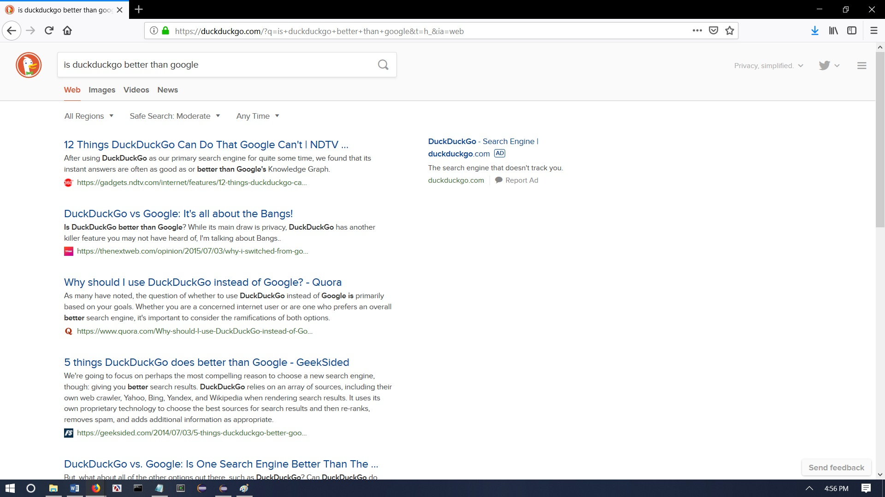

Here’s what DuckDuckGo looks like.
The homepage always has the duck logo on it.
Here’s what happens after you search for something.
If you want to search for something and you don’t want the government to know, use DuckDuckGo. It can basically do what Google does, except location related stuff because DuckDuckGo cares about your privacy. So the next time you want to look up something suspicious, try DuckDuckGo. If this type of privacy is exactly what you are looking for, go ahead, and try it out yourself. We don’t judge.